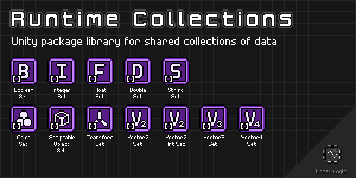

Overview

Unity package library for sharing collections of data across components and scenes, allowing other components to react when their contents change.
Heavily inspired by the infamous Unite 2017: Game Architecture with Scriptable Objects presentation by Ryan Hipple (GitHub).
Unfortunately Unity does not understand generics in the Editor and Inspectors, so only concrete types can be used. Fortunately, this can be made easy by deriving from a single generic type allowing the same common behaviors.
NOTE: This package is still in development and may have breaking changes in future versions until a stable v1.0.0 release is made.
Changelog
All notable changes to this library will be documented in this file.
The format is based on Keep a Changelog, and this project adheres to Semantic Versioning.
[0.2.4] - 2022-12-30
Changed
- Moved all
RuntimeSet<T>classes toUnderLogic.Collections.Setsnamespace - Moved all
RuntimeSetWatcher<T, TSet>classes toUnderLogic.Collections.Sets.Watchersnamespace
[0.2.3] - 2022-12-29
Added
BoolSetcollectionBoolSetWatchercomponentAllowDuplicatesproperty forRuntimeSetcollectionAddRange(IEnumerable<T>)method forRuntimeSetcollection- Icons for
RuntimeSetcollections in the Editor
Changed
Add(T)method forRuntimeSetcollection optionally allows duplicatesTryReplace(T, T)method forRuntimeSetcollection now checks for duplicates prior to replacing
[0.2.2] - 2022-12-08
Fixed
- Missing meta files
[0.2.1] - 2022-12-06
Added
TryAdd(int) : boolmethod toDoubleSetvariantTryAdd(float) : boolmethod toDoubleSetvariantTryAdd(int) : boolmethod toFloatSetvariantTryAdd(bool) : boolmethod toStringSetvariantTryAdd(int) : boolmethod toStringSetvariantTryAdd(float) : boolmethod toStringSetvariantTryAdd(double) : boolmethod toStringSetvariantTryAdd(Vector2Int) : boolmethod toVector2SetvariantTryAdd(Vector2Int) : boolmethod toVector3SetvariantTryAdd(Vector2) : boolmethod toVector3SetvariantTryAdd(Vector2Int) : boolmethod toVector4SetvariantTryAdd(Vector2) : boolmethod toVector4SetvariantTryAdd(Vector3) : boolmethod toVector4SetvariantTryAdd(T) : boolmethod toRuntimeSet<T>base classTryReplace(T, T)method toRuntimeSet<T>base class- Docs via
mdbookinDocumentation~directory - GitHub CI/CD workflows for documentation
Changed
- Renamed
collectionSetserialized field tocollectioninRuntimeSetWatcherbase class - Expose
Collectiongetter property inRuntimeSetWatcherbase class
[0.2.0] - 2022-12-02
Added
RuntimeSetWatcher<T>abstract base classColorSetWatchercomponentDoubleSetWatchercomponentFloatSetWatchercomponentIntSetWatchercomponentScriptableObjectSetWatchercomponentStringSetWatchercomponentTransformSetWatchercomponentVector2IntSetWatchercomponentVector2SetWatchercomponentVector3SetWatchercomponentVector4SetWatchercomponent- Set Watchers sample scene
[0.1.3] - 2022-12-02
Added
InitialItemsreadonly property toRuntimeSet<T>base classMakeReadOnly()method toRuntimeSet<T>base class
[0.1.2] - 2022-12-01
Added
Add(int)method toFloatSetcollectionRemove(int)method toFloatSetcollectionAdd(int)method toDoubleSetcollectionAdd(float)method toDoubleSetcollectionRemove(int)method toDoubleSetcollectionRemove(float)method toDoubleSetcollectionAdd(bool)method toStringSetcollectionAdd(int)method toStringSetcollectionAdd(float)method toStringSetcollectionAdd(double)method toStringSetcollectionRemove(bool)method toStringSetcollectionRemove(int)method toStringSetcollectionRemove(float)method toStringSetcollectionRemove(double)method toStringSetcollectionAdd(Vector2Int)method toVector2SetcollectionRemove(Vector2Int)method toVector2SetcollectionVector2IntSetcollectionVector4SetcollectionColorSetcollection
[0.1.1] - 2022-12-01
Added
IntSetcollectionFloatSetcollectionDoubleSetcollectionVector2SetcollectionVector3Setcollection
[0.1.0] - 2022-12-01
Added
RuntimeSet<T>abstract base classScriptableObjectSetcollectionStringSetcollectionTransformSetcollection- Sets sample scene
Installation
OpenUPM
OpenUPM is an open source Unity package registry that allows you to easily install thousands of packages.
You can install this library with the following CLI command:
$ openupm add com.underlogic.runtime-collections
Git URL
Starting with Unity 2019.3 you can add packages via git url.
You can add this package by the following url: https://github.com/UnderLogic/runtime-collections
Using this method will allow you to update the package through the Unity Package Manager.
Local Package
Alternatively, you can clone the git repository and add the package locally.
Getting Started
Context
To best understand the purpose of this library and the problems it solves, it is highly recommended to watch the Unite 2017: Game Architecture with Scriptable Objects by Ryan Hipple.
Use Cases
Shared Collections
The common case of needing to share collections of data between various components, potentially across multiple scenes. Easy to drag and drop references in the Editor and view/modify them in the Inspector during play mode.
See runtime-variables library in the related-libraries section for working with variable data.
Singleton
The common case of needing a single, global instance of data that can be accessed everywhere. This avoids the common pitfalls of traditional Unity singleton objects.
Event-Based Architecture
The case of only wanting to update or perform actions when necessary (reactively) instead of wastefully computing each frame. This is very common in UI-heavy applications.
See event-channels library in the related-libraries section for working with an event bus.
Samples
The Samples~ folder contains sample scenes showcasing various aspects of the library in action.
It is recommended to import and play around with them in Unity to get a feel for how to use the library.
Custom Collections
While this library provides many of the common Unity types you will use, you may want to extend this library with your own custom collections specific to your application. Fortunately, this is rather easy and typically only involves creating a derived class from one of the base classes. You may also add any additional helper properties and methods as you need.
Sets
- Create a new class that derives from
RuntimeSet<T>, whereTshould be the type of set. - Ensure the new type is marked with the
CreateAssetMenuattribute, so you can create instances in the Editor. - Create any instances of the new variable in your
Assetsfolder. - Configure the
isReadOnly,allowDuplicates, andinitialItemsfields as needed. - Now you can use them throughout your application.
NOTE: While most people create ScriptableObject instances in the Editor, you can create them at runtime as well!
Watchers
- Create a new class that derives from
RuntimeSetWatcher<T, TSet>, whereTshould be the underlying type andTSetis the set type. - You can now use the watcher component in your scenes.
Related Libraries


Sets
Overview
Sets are implemented as ScriptableObject instances that can contain a collection of values.
They function similar to an array or list but do not allow duplicate values to be added by default.
They are observable and provide events when items are added or removed.
RuntimeSet<T>
Abstract base class that all other runtime sets derive from.
Implements ICollection<T> and IEnumerable<T> interfaces.
Description
Represents an observable set of T values that can be shared and modified throughout the application.
By default, the set does not allow duplicate values but this can be overriden.
Serialized Fields (Inspector)
isReadOnly : bool- Whether the set can be mutated.allowDuplicates : bool- Whether the set can contain duplicate values.initialItems : List<T>- Initial list of items, will be re-applied on restart.items : List<T>- The current items in the set.
NOTE: Any duplicates in the initialItems will not be preserved when copied to items during OnEnable() (unless allowDuplicates is true).
Public Properties
IsReadOnly : bool(get) - Whether the set can be mutated.AllowDuplicates : bool(get) - Whether the set can contain duplicate values.InitialItems : IReadOnlyCollection<T>(get) - Read-only view of the initial items for the set.Count : int(get) - The number of items currently in the set.this[int] : T(get) - Returns the item in the set by index, zero-based.
Public Events
ItemAdded : UnityAction<T>- Raised when an item is added to the set.ItemRemoved : UnityAction<T>- Raised when an item is removed from the set.ItemsChanged : UnityAction- Raised when an item is added or removed from the set.
Public Methods
Contains(T) : bool- Returns whether the set contains the valueTprovided.IndexOf(T) : int- Returns the index of the valueTwithin the set, or-1if not found.TryGet(int, out T) : bool- Attempts to get an item by index and returns the item as anoutparameter. Returns whether an item was found.Add(T)- Adds a valueTto the set. If the set already contains the value, it is ignored.AddRange(IEnumerable<T>)- Adds a range of values to the set. If the set already contains a value, it is ignored.TryAdd(T) : bool- Attempts to add a valueTto the set, returns whether an item was added.Remove(T) : bool- Attempts to remove a valueTfrom the set. Returns whether an item was removed.TryReplace(T, T) : bool- Attempts to replace one valueTwith anotherTwithin the set. Returns whether an item was found to be replaced, and whether the replacement was successful.Clear()- Removes all items from the set. Will raise events for each item removed.CopyTo(T[], int)- Copies the items from this set to anotherT[]array.MakeReadOnly()- Marks the set as readonly, useful for freezing the collection after initialization.GetEnumerator() : IEnumerator<T>- Get an enumerator that can be used to iterate over the set.RaiseItemsChanged()- Manually raises theItemsChangedevent, useful for forcing refreshes on observers.
NOTE: Trying to modify a readonly set will result in an InvalidOperationException being thrown.
NOTE: Duplicate values are ignored when adding to the set, unless AllowDuplicates is set to true.
BoolSet
Derives from RuntimeSet<T>.
Description
Represents a set of bool values that can be shared and modified throughout the application.
This class does not have any additional members.
ColorSet
Derives from RuntimeSet<T>.
Description
Represents a set of Color values that can be shared and modified throughout the application.
This class does not have any additional members.
DoubleSet
Derives from RuntimeSet<T>.
Description
Represents a set of double values that can be shared and modified throughout the application.
Public Methods
Add(int)- Adds a signedintvalue to the set.Add(float)- Adds afloatvalue to the set.TryAdd(int) : bool- Attempts to add a signedintvalue to the set. Returns whether an item was added.TryAdd(float) : bool- Attempts to add afloatvalue to the set. Returns whether an item was added.Remove(int) : bool- Removes a signedintvalue from the set. Returns whether an item was removed.Remove(float) : bool- Removes afloatvalue from the set. Returns whether an item was removed.
FloatSet
Derives from RuntimeSet<T>.
Description
Represents a set of float values that can be shared and modified throughout the application.
Public Methods
Add(int)- Adds a signedintvalue to the set.TryAdd(int) : bool- Attempts to add a signedintvalue to the set. Returns whether an item was added.Remove(int) : bool- Removes a signedintvalue from the set. Returns whether an item was removed.
IntSet
Derives from RuntimeSet<T>.
Description
Represents a set of int values that can be shared and modified throughout the application.
This class does not have any additional members.
ScriptableObjectSet
Derives from RuntimeSet<T>.
Description
Represents a set of ScriptableObject values that can be shared and modified throughout the application.
This class does not have any additional members.
StringSet
Derives from RuntimeSet<T>.
Description
Represents a set of string values that can be shared and modified throughout the application.
Public Methods
Add(bool)- Adds the string representation of aboolvalue to the set.Add(int)- Adds the string representation of a signedintvalue to the set.Add(float)- Adds the string representation of afloatvalue to the set.Add(double)- Adds the string representation of adoublevalue to the set.TryAdd(bool)- Attempts to add the string representation of aboolvalue to the set. Return whether an item was added.TryAdd(int)- Attempts to add the string representation of a signedintvalue to the set. Return whether an item was added.TryAdd(float)- Attempts to add the string representation of afloatvalue to the set. Return whether an item was added.TryAdd(double)- Attempts to add the string representation of adoublevalue to the set. Return whether an item was added.Remove(int) : bool- Removes the string representation of aboolvalue from the set. Returns whether an item was removed.Remove(int) : bool- Removes the string representation of a signedintvalue from the set. Returns whether an item was removed.Remove(float) : bool- Removes the string representation of afloatvalue from the set. Returns whether an item was removed.Remove(double) : bool- Removes the string representation of a signedintvalue from the set. Returns whether an item was removed.
NOTE: The string representations will be formatted using CultureInfo.CurrentCulture.
TransformSet
Derives from RuntimeSet<T>.
Description
Represents a set of Transform values that can be shared and modified throughout the application.
This class does not have any additional members.
Vector2IntSet
Derives from RuntimeSet<T>.
Description
Represents a set of Vector2Int values that can be shared and modified throughout the application.
This class does not have any additional members.
Vector2Set
Derives from RuntimeSet<T>.
Description
Represents a set of Vector2 values that can be shared and modified throughout the application.
Public Methods
Add(Vector2Int)- Adds aVector2Intvalue to the set.TryAdd(Vector2Int) : bool- Attempts to add aVector2Intvalue to the set. Returns whether an item was added.Remove(Vector2Int) : bool- Removes aVector2Intvalue from the set. Returns whether an item was removed.
Vector3Set
Derives from RuntimeSet<T>.
Description
Represents a set of Vector3 values that can be shared and modified throughout the application.
Public Methods
Add(Vector2Int)- Adds aVector2Intvalue to the set.Add(Vector2)- Adds aVector2value to the set.TryAdd(Vector2Int) : bool- Attempts to add aVector2Intvalue to the set. Returns whether an item was added.TryAdd(Vector2) : bool- Attempts to add aVector2value to the set. Returns whether an item was added.Remove(Vector2Int) : bool- Removes aVector2Intvalue from the set. Returns whether an item was removed.Remove(Vector2) : bool- Removes aVector2value from the set. Returns whether an item was removed.
Vector4Set
Derives from RuntimeSet<T>.
Description
Represents a set of Vector4 values that can be shared and modified throughout the application.
Public Methods
Add(Vector2Int)- Adds aVector2Intvalue to the set.Add(Vector2)- Adds aVector2value to the set.Add(Vector3)- Adds aVector3value to the set.TryAdd(Vector2Int) : bool- Attempts to add aVector2Intvalue to the set. Returns whether an item was added.TryAdd(Vector2) : bool- Attempts to add aVector2value to the set. Returns whether an item was added.TryAdd(Vector3) : bool- Attempts to add aVector3value to the set. Returns whether an item was added.Remove(Vector2Int) : bool- Removes aVector2Intvalue from the set. Returns whether an item was removed.Remove(Vector2) : bool- Removes aVector2value from the set. Returns whether an item was removed.Remove(Vector3) : bool- Removes aVector3value from the set. Returns whether an item was removed.
Watchers
Overview
Runtime collection watchers are implemented as MonoBehaviour components that can be used to bind UnityEvent actions to collection change events via the Unity Inspector.
This allows the watchers to notify other components without needing to write extra boilerplate code for subscribing and unsubscribing to those events.
It also allows multiple actions to be triggered from a single collection change event.
RuntimeSetWatcher<T, TSet>
Abstract base class that all other runtime set watchers derive from.
Description
Component that watches a RuntimeSet<T> for changes and raises events.
Serialized Fields (Inspector)
collection : TSet- The collection to watch for changes.raiseOnAwake : bool- Whether theonItemsChangedevent should be raised whenAwake()is called.raiseOnEnable : bool- Whether theonItemsChangedevent should be raised whenOnEnable()is called.raiseOnStart : bool- Whether theonItemsChangedevent should be raised whenStart()is called.
Public Events (Inspector)
onItemAdded : UnityEvent<T>- The actions to perform when an item is added to the set.onItemRemoved : UnityEvent<T>- The actions to perform when an item is remove from the set.onItemsChanged : UnityEvent- The actions to perform when an item is added or removed from the set.
Public Properties
Collection : TSet- The collection being watched for changes.
Public Methods
RaiseItemAdded(T)- Manually raises theonItemAddedevent with the valueTprovided.RaiseItemRemoved(T)- Manually raises theonItemRemovedevent with the valueTprovided.RaiseItemsChanged- Manually raises theonItemsChangedevent.
NOTE: Manually raising these events will only trigger the UnityEvent actions on this component.
BoolSetWatcher
Derives from RuntimeSetWatcher<T, TSet>.
Description
Component that watches a BoolSet for changes and raises events.
This component does not have any additional members.
ColorSetWatcher
Derives from RuntimeSetWatcher<T, TSet>.
Description
Component that watches a ColorSet for changes and raises events.
This component does not have any additional members.
DoubleSetWatcher
Derives from RuntimeSetWatcher<T, TSet>.
Description
Component that watches a DoubleSet for changes and raises events.
This component does not have any additional members.
FloatSetWatcher
Derives from RuntimeSetWatcher<T, TSet>.
Description
Component that watches a FloatSet for changes and raises events.
This component does not have any additional members.
IntSetWatcher
Derives from RuntimeSetWatcher<T, TSet>.
Description
Component that watches a IntSet for changes and raises events.
This component does not have any additional members.
ScriptableObjectSetWatcher
Derives from RuntimeSetWatcher<T, TSet>.
Description
Component that watches a ScriptableObjectSet for changes and raises events.
This component does not have any additional members.
StringSetWatcher
Derives from RuntimeSetWatcher<T, TSet>.
Description
Component that watches a StringSet for changes and raises events.
This component does not have any additional members.
TransformSetWatcher
Derives from RuntimeSetWatcher<T, TSet>.
Description
Component that watches a TransformSet for changes and raises events.
This component does not have any additional members.
Vector2IntSetWatcher
Derives from RuntimeSetWatcher<T, TSet>.
Description
Component that watches a Vector2IntSet for changes and raises events.
This component does not have any additional members.
Vector2SetWatcher
Derives from RuntimeSetWatcher<T, TSet>.
Description
Component that watches a Vector2Set for changes and raises events.
This component does not have any additional members.
Vector3SetWatcher
Derives from RuntimeSetWatcher<T, TSet>.
Description
Component that watches a Vector3Set for changes and raises events.
This component does not have any additional members.
Vector4SetWatcher
Derives from RuntimeSetWatcher<T, TSet>.
Description
Component that watches a Vector4Set for changes and raises events.
This component does not have any additional members.